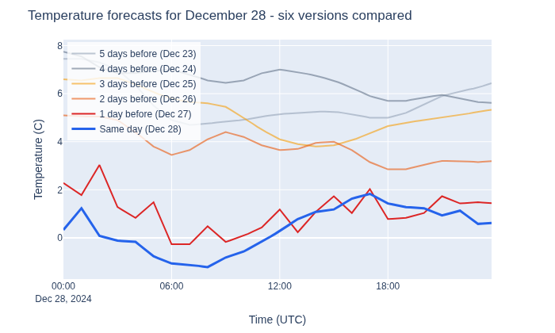
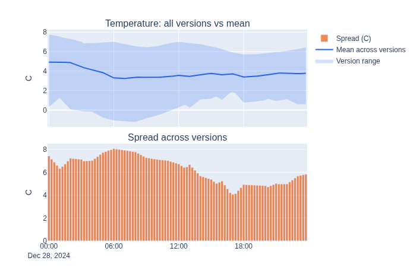
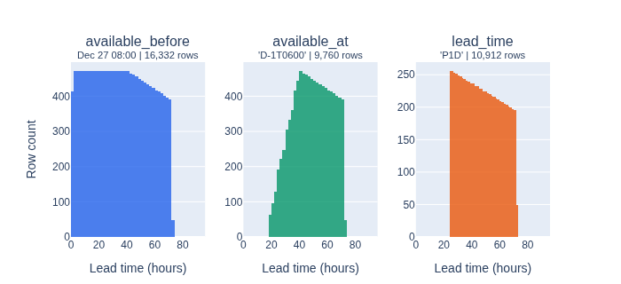

Understanding Time Series Datasets#
Imagine it is 08:00 UTC on December 27, 2024. You need to forecast electricity load for a medium-voltage substation in Gorredijk (NL) over the next 48 hours. What data can you use?
The answer depends on when data became available - not just what timestamps it describes. A weather forecast issued at 06:00 today describes tomorrow’s temperature, but a forecast issued tomorrow morning describes the same moment more accurately. Using future-issued data during training causes data leakage.
OpenSTEF prevents this with
TimeSeriesDataset - a thin wrapper around a
pandas.DataFrame that adds a timestamp index and an available_at column
recording when each row became known. By filtering on available_at, you
guarantee that only genuinely available data enters the model.
This notebook walks through a real forecasting scenario using the Liander distribution network dataset, building from a single data source up to a multi-source forecasting pipeline.
How versioning works#
Every row in a TimeSeriesDataset has two time
references:
index (timestamp) - the moment this row describes
available_at - the moment this row became known
The gap between them is the lead time. Let’s look at one timestamp:
sample_ts = pd.Timestamp("2024-12-28 12:00", tz="UTC")
weather.data.loc[[sample_ts], ["temperature_2m", "available_at"]]
| temperature_2m | available_at | |
|---|---|---|
| timestamp | ||
| 2024-12-28 12:00:00+00:00 | 0.2805 | 2024-12-28 12:00:00+00:00 |
| 2024-12-28 12:00:00+00:00 | 1.1805 | 2024-12-27 12:00:00+00:00 |
| 2024-12-28 12:00:00+00:00 | 3.6500 | 2024-12-26 12:00:00+00:00 |
| 2024-12-28 12:00:00+00:00 | 4.1000 | 2024-12-25 12:00:00+00:00 |
| 2024-12-28 12:00:00+00:00 | 7.0000 | 2024-12-24 12:00:00+00:00 |
| 2024-12-28 12:00:00+00:00 | 5.1500 | 2024-12-23 12:00:00+00:00 |
Six forecast runs predicted the same moment. The earliest was issued five days ahead (long lead time), the latest was same-day (short lead time). Each version refines the prediction as the event approaches.
The forecasting challenge: December 28#
December 28, 2024 brought below-normal temperatures to northern Netherlands. How did the six forecast versions perform?

The spread between versions is significant: early forecasts predicted warmer conditions than later ones. Let’s quantify that spread:

The spread exceeds 2 degrees C during parts of the day - a direct measure of forecast uncertainty. Large divergence means the weather model was still converging on the actual outcome.
At our decision point (Dec 27, 08:00), we can only use the “1 day before”
version. The “same day” version does not exist yet. Without tracking
available_at, we might accidentally use it during training.
Filtering: what was genuinely available?#
TimeSeriesDataset provides three filter methods
to enforce data availability constraints:
Method |
Question it answers |
|---|---|
What existed at a specific moment? |
|
What matches a recurring operational schedule? |
|
What has at least N hours of advance notice? |
To demonstrate clearly, let’s build a synthetic dataset where forecasts are issued every 3 hours; each run covers the next 72 hours. This produces a rich distribution of lead times:
Synthetic dataset: 16,992 rows, 864 unique timestamps, ~19 versions/timestamp
now = datetime(2024, 12, 27, 8, 0, tzinfo=UTC)
# Point-in-time: only rows that existed by Dec 27 08:00
snapshot_synth = synth_weather.filter_by_available_before(now)
# Operational schedule: only rows available by 06:00 the day before the target
day_ahead_synth = synth_weather.filter_by_available_at(AvailableAt.from_string("D-1T0600"))
# Minimum lead time: at least 24h between issuance and target
long_lead_synth = synth_weather.filter_by_lead_time(LeadTime.from_string("P1D"))

The three filters produce distinctly different lead-time distributions:
available_before keeps everything issued before our decision point – a uniform spread of lead times from 0 to 72 hours.
available_at (D-1T0600) enforces a recurring operational window - only forecasts available by yesterday 06:00 survive, shifting the distribution toward longer lead times (>18h).
lead_time (P1D) removes all rows with less than 24 hours of advance notice, producing a hard cutoff.
Now let’s apply the same filters to our real weather data and resolve versions:
Resolving versions with select_version#
After filtering, we still have multiple versions per timestamp. Models need
exactly one row per timestamp.
select_version() picks the
freshest (most recent available_at) row for each timestamp:
now = datetime(2024, 12, 27, 8, 0, tzinfo=UTC)
snapshot = weather.filter_by_available_before(now)
Before select_version - multiple versions per timestamp:
(36 rows for 3 hours)
| temperature_2m | available_at | |
|---|---|---|
| timestamp | ||
| 2024-12-28 10:00:00+00:00 | 4.2000 | 2024-12-26 10:00:00+00:00 |
| 2024-12-28 10:00:00+00:00 | 5.0000 | 2024-12-25 10:00:00+00:00 |
| 2024-12-28 10:00:00+00:00 | 6.5500 | 2024-12-24 10:00:00+00:00 |
| 2024-12-28 10:00:00+00:00 | 4.9000 | 2024-12-23 10:00:00+00:00 |
| 2024-12-28 10:15:00+00:00 | 4.1125 | 2024-12-26 10:15:00+00:00 |
| 2024-12-28 10:15:00+00:00 | 4.8750 | 2024-12-25 10:15:00+00:00 |
| 2024-12-28 10:15:00+00:00 | 6.6250 | 2024-12-24 10:15:00+00:00 |
| 2024-12-28 10:15:00+00:00 | 4.9375 | 2024-12-23 10:15:00+00:00 |
| 2024-12-28 10:30:00+00:00 | 4.0250 | 2024-12-26 10:30:00+00:00 |
| 2024-12-28 10:30:00+00:00 | 4.7500 | 2024-12-25 10:30:00+00:00 |
| 2024-12-28 10:30:00+00:00 | 6.7000 | 2024-12-24 10:30:00+00:00 |
| 2024-12-28 10:30:00+00:00 | 4.9750 | 2024-12-23 10:30:00+00:00 |
After select_version - one row per timestamp, no available_at column:
resolved = snapshot.select_version()
print(f" {len(snapshot.data):,} rows -> {len(resolved.data):,} rows")
resolved.data.loc["2024-12-28 10:00":"2024-12-28 12:00", ["temperature_2m"]].head(9)
199,734 rows -> 35,169 rows
| temperature_2m | |
|---|---|
| timestamp | |
| 2024-12-28 10:00:00+00:00 | 4.2000 |
| 2024-12-28 10:15:00+00:00 | 4.1125 |
| 2024-12-28 10:30:00+00:00 | 4.0250 |
| 2024-12-28 10:45:00+00:00 | 3.9375 |
| 2024-12-28 11:00:00+00:00 | 3.8500 |
| 2024-12-28 11:15:00+00:00 | 3.8000 |
| 2024-12-28 11:30:00+00:00 | 3.7500 |
| 2024-12-28 11:45:00+00:00 | 3.7000 |
| 2024-12-28 12:00:00+00:00 | 3.6500 |
Notice two things:
For each timestamp,
select_versionkept the row with the latestavailable_at- the most up-to-date information that passed the filter.The
available_atcolumn is gone. The result is a plain DataFrame indexed by timestamp - ready for feature engineering and model training.
This resolution is intentionally lossy: you commit to one version per timestamp and discard the rest.
Non-versioned datasets#
Not all sources have multiple versions. EPEX prices and load measurements have exactly one row per timestamp - they are non-versioned:
print(f"EPEX versioned: {epex.is_versioned} (rows: {len(epex.data):,})")
print(f"Load versioned: {load.is_versioned} (rows: {len(load.data):,})")
# select_version is safe to call on any TimeSeriesDataset - it's a no-op here
flat_epex = epex.select_version()
print(f"\nEPEX after select_version: {len(flat_epex.data):,} rows (unchanged)")
EPEX versioned: True (rows: 35,136)
Load versioned: True (rows: 35,136)
EPEX after select_version: 35,136 rows (unchanged)
You can also create a non-versioned
TimeSeriesDataset from any DataFrame with a
DatetimeIndex:
# Build a simple non-versioned dataset from scratch
measurements = pd.DataFrame(
{"power_kw": [100, 120, 115, 108, 95]},
index=pd.date_range("2025-01-01", periods=5, freq="15min", tz="UTC"),
)
tsd_simple = TimeSeriesDataset(measurements, sample_interval=timedelta(minutes=15))
print(f"Features: {tsd_simple.feature_names}")
print(f"Versioned: {tsd_simple.is_versioned}")
Features: ['power_kw']
Versioned: False
# Build a versioned dataset by adding an available_at column
forecasts = pd.DataFrame(
{
"temperature": [2.1, 1.8, 1.5, 1.2],
"available_at": pd.to_datetime(
[
"2025-01-01 00:00",
"2025-01-01 06:00", # two versions for 12:00
"2025-01-01 00:00",
"2025-01-01 06:00", # two versions for 12:15
],
utc=True,
),
},
index=pd.DatetimeIndex(
["2025-01-01 12:00", "2025-01-01 12:00", "2025-01-01 12:15", "2025-01-01 12:15"],
tz="UTC",
),
)
tsd_versioned = TimeSeriesDataset(forecasts, sample_interval=timedelta(minutes=15))
print(f"Features: {tsd_versioned.feature_names}")
print(f"Versioned: {tsd_versioned.is_versioned}")
Features: ['temperature']
Versioned: True
The data sources#
So far we have focused on weather, but a load forecast also needs energy prices,
standard profiles, and historical load measurements. The Liander dataset
contains four sources, each stored as a
TimeSeriesDataset:
summary = pd.DataFrame({
"Source": ["Load", "Weather", "EPEX prices", "Profiles"],
"Features": [
", ".join(load.feature_names),
f"{len(weather.feature_names)} variables",
", ".join(epex.feature_names),
f"{len(profiles.feature_names)} profiles",
],
"Rows": [len(load.data), len(weather.data), len(epex.data), len(profiles.data)],
"Versioned": [load.is_versioned, weather.is_versioned, epex.is_versioned, profiles.is_versioned],
"Update schedule": ["real-time", "every ~6h", "noon day-before", "months ahead"],
})
summary.set_index("Source").style.set_properties(padding="6px 12px")
| Features | Rows | Versioned | Update schedule | |
|---|---|---|---|---|
| Source | ||||
| Load | load | 35136 | True | real-time |
| Weather | 11 variables | 201534 | True | every ~6h |
| EPEX prices | EPEX_NL | 35136 | True | noon day-before |
| Profiles | 15 profiles | 35136 | True | months ahead |
These sources update on different schedules - weather has ~6 versions per timestamp, EPEX has one, and profiles never change. A naive DataFrame join would create a cross-product explosion.
Combining sources: VersionedTimeSeriesDataset#
VersionedTimeSeriesDataset solves this by
keeping each source as a separate part and only joining them when you
explicitly resolve. This is especially important for backtesting, where the
system replays historical decisions: at each past decision point, the filters
reconstruct exactly what was available, so backtested performance reflects
real operational conditions.
Let’s combine weather and EPEX prices:
combined = VersionedTimeSeriesDataset([weather, epex])
print(f"Parts: {len(combined.data_parts)}")
print(f"Timestamps: {len(combined.index):,}")
print(f"Features: {combined.feature_names[:3]} ... {combined.feature_names[-1]}")
Parts: 2
Timestamps: 35,229
Features: ['temperature_2m', 'relative_humidity_2m', 'surface_pressure'] ... EPEX_NL
The same filter_by_* methods work here - they apply the constraint to each
part independently:
filtered_combined = combined.filter_by_available_before(now)
print(f"Weather part: {len(filtered_combined.data_parts[0].data):,} rows")
print(f"EPEX part: {len(filtered_combined.data_parts[1].data):,} rows")
Weather part: 199,734 rows
EPEX part: 34,748 rows
Resolving to flat data#
select_version()
resolves each part (picks freshest version) then joins along columns into a
single flat TimeSeriesDataset:
flat = filtered_combined.select_version()
print(f"Result: {type(flat).__name__} with {len(flat.data):,} rows")
print(f"Columns: {list(flat.data.columns[:5])} ...")
Result: TimeSeriesDataset with 35,229 rows
Columns: ['temperature_2m', 'relative_humidity_2m', 'surface_pressure', 'cloud_cover', 'wind_speed_10m'] ...
For models that need to train at multiple lead times (e.g. 1h, 4h, 24h
ahead), to_horizons()
applies lead-time filtering + version selection for each horizon and stacks the
results. The output has a horizon column:
horizons = [LeadTime.from_string("PT1H"), LeadTime.from_string("PT4H"), LeadTime.from_string("P1D")]
horizon_data = combined.to_horizons(horizons)
print(f"Shape: {horizon_data.data.shape}")
print(f"Horizons: {horizon_data.data['horizon'].unique().tolist()}")
Shape: (105687, 13)
Horizons: [Timedelta('0 days 01:00:00'), Timedelta('0 days 04:00:00'), Timedelta('1 days 00:00:00')]
Summary#
Concept |
Role |
|---|---|
One data source: timestamp index + |
|
Multiple sources with different update schedules |
|
|
Restrict to genuinely available data (works on both types) |
Pick freshest version per timestamp (lossy) |
|
Resolve at fixed lead times for multi-horizon training |
The workflow:
Load sources as
TimeSeriesDatasetinstancesFilter to enforce what was available at prediction time
Resolve versions with
select_version()for single-source workCombine with
VersionedTimeSeriesDatasetwhen multiple sources are neededResolve to flat data with
select_version()orto_horizons()